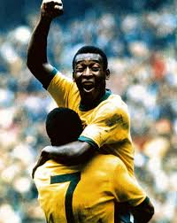

-

Pelé, atacante da seleção em 1958.
Edson Arantes do Nascimento (Pelé)
Famoso camisa 10 da seleção de 1958, (Três Corações, 23 de outubro de 1940), mais conhecido como Pelé, é um ex-futebolista brasileiro que atuava como atacante. Ele é amplamente considerado como um dos maiores atletas de todos os tempos.